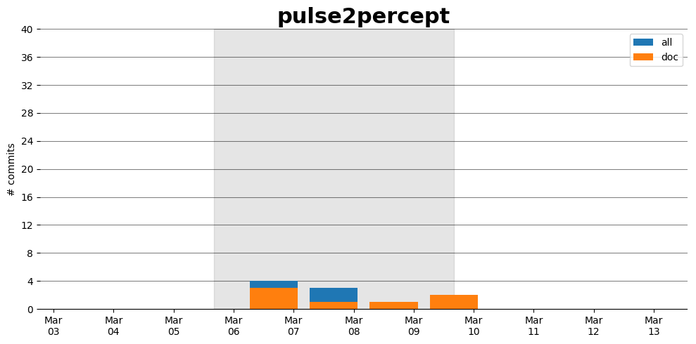

pulse2percept
Information
- Documentation: https://uwescience.github.io/pulse2percept/
Description
Pulse2percept is a Python library for bionic vision. It features a computational model that has the goal of predicting the perceptual experience of retinal prosthesis patients. The model takes as input a series of (simulated) electrical pulse trains---one pulse train per electrode in the array---and converts them into an image sequence that corresponds to the predicted perceptual experience of a patient.
Activity
